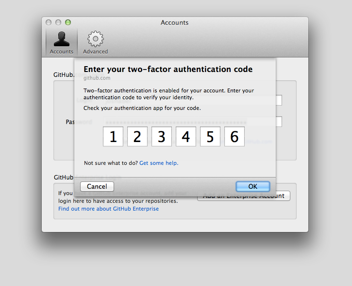

With 2FA enabled, you'll be asked to provide your 2FA authentication code, as well as your password, whenever you access GitHub.
Depending on how you configured two-factor authentication, your authentication code will either be generated by an application or delivered to your phone via text message. You can choose to switch between delivery methods at any time.
Tip: GitHub Enterprise cannot send authentication codes as SMS messages—it only supports TOTP smartphone clients, such as Google Authenticator.
GitHub will only ask you to provide your 2FA authentication code again if you've logged out, are using a new device, or your session expires.
If your authentication fails several times, you may wish to synchronize your phone's clock with your mobile provider. Often, this involves checking the "Set automatically" option on your phone's clock, rather than providing your own time zone.
Generating a code through a TOTP application
If you chose to set up two-factor authentication using a TOTP application on your smartphone, you can generate an authentication code for GitHub at any time. After entering your username and password, you'll be asked for your "Two-factor authentication code". In most cases, just launching the application will generate a new code. You should refer to your application's documentation for specific instructions. You can then enter this code to gain access to your account.
If you delete the mobile application after configuring two-factor authentication, you'll need to provide your recovery code to get access to your account.
Receiving a text message
If you set up two-factor authentication via text messages, GitHub will send you a text message with your authentication code. After entering your username and password, you'll be asked for your "Two-factor authentication code." This will automatically be delivered to your phone via text message. You can then enter this code to gain access to your account.
When You'll Be Asked
There are several scenarios where you'll be asked to provide your 2FA code:
Through the web
If you sign into GitHub through the website, you'll be provided with the following prompt asking for your 2FA code:
If you're providing a recovery code you previously downloaded from GitHub, you will need to click the Enter a two-factor recovery code link and follow the instructions for entering your recovery code instead of entering it in the Authentication Code box.
Through the API
With 2FA enabled, you'll need to pass along a special header containing your 2FA authentication code. More information can be found within our Developer Documentation.
Through GitHub for Mac
After setting up 2FA and reauthenticating to GitHub, you'll be provided with the following prompt asking for your 2FA code:

Depending on how you set up your account, you'll be presented with a dialog asking you to enter your 2FA code. If you set up 2FA through SMS, we'll text it to you. Otherwise, you can generate one from your TOTP application.
Through GitHub for Windows
After setting up 2FA and reauthenticating to GitHub, you'll be provided with the following prompt asking for your 2FA code:
Depending on how you set up your account, you'll be presented with a dialog asking you to enter your 2FA code. If you set it up 2FA SMS, we'll text it to you. Otherwise, you can generate one from your TOTP application.
Through the command-line
Instead of entering your password for HTTPS Git, you must provide a personal access token instead of entering your password.
2FA and Subversion (svn command line, tortoise svn, etc)
When you access a repository via Subversion, you must provide a personal access token instead of entering your password.